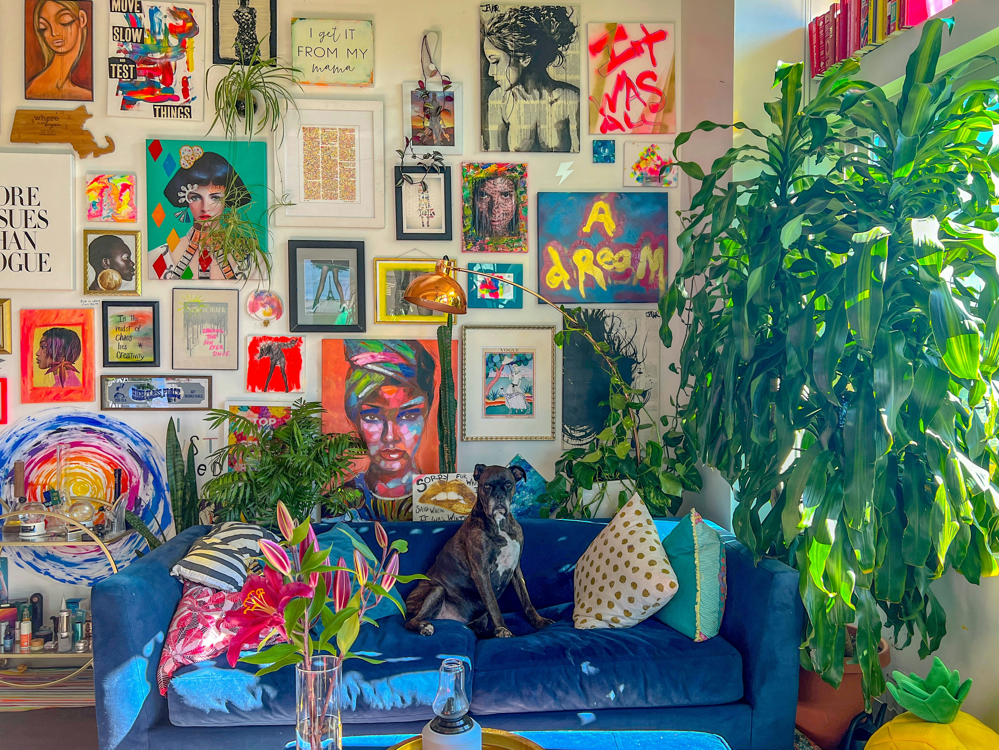

Affordable Wall Art Ideas for Apartments (Digital Art Guide)
What is Affordable Wall Art?
Affordable wall art refers to budget-friendly decorative pieces such as digital prints, posters, and DIY artwork that enhance the look of a space without high costs. It is especially popular for apartments where cost-effective and flexible decor solutions are preferred.
What is Digital Wall Art?
Digital wall art is artwork that is purchased or downloaded online and printed by the user. It allows homeowners to decorate their walls at a lower cost while offering flexibility in size, style, and customization.
Quick Answer: Affordable Wall Art Ideas for Apartments
If you're looking for affordable wall art ideas for apartments, the best options include digital art prints, gallery walls, budget frames, and printable artwork. These options are cost-effective, easy to customize, and perfect for small spaces.
- Digital downloads (instant and cheap)
- Gallery wall using small prints
- Minimalist posters and line art
- DIY framed prints

Why Digital Art is Perfect for Wall Decor
Budget-Friendly Without Compromising Style
Digital art allows you to decorate your home at a fraction of the cost compared to traditional paintings.
Instant Access & Convenience
You can download and print your artwork immediately without waiting for shipping.
Fully Customizable
You can resize artwork, choose paper quality, and frame it based on your style.
Perfect for Small Apartments
Digital prints are ideal for compact spaces where flexibility and affordability matter the most.
How to Choose the Right Digital Wall Art
Consider the Room Type
- Bedroom: Choose calm and relaxing designs
- Living Room: Use bold statement pieces
Choose the Right Size
- Small wall → 1–2 medium prints
- Large wall → Gallery wall or large artwork
Match Colors with Your Interior
Match artwork with your furniture or use contrast to make it stand out.
Affordable Sources for Digital Wall Art
You can find great options on platforms like Etsy or use free resources like Unsplash and Pexels.
You can also explore our guide on best wall art for bedroom for more ideas.
DIY Ideas to Save Money
- Create a gallery wall
- Use budget frames
- Rotate seasonal prints
Common Mistakes to Avoid
- Choosing wrong size
- Ignoring color balance
- Overcrowding walls
You can also read our guide on best wall art for bedroom for more ideas.
Why Affordable Wall Art is Trending
According to recent home decor trends, more than 60% of apartment owners prefer budget-friendly decor solutions like digital wall art and printable designs. The rise of online platforms has made it easier than ever to access stylish artwork without spending heavily.
Experts in interior design also suggest that minimalist and digital art styles are dominating modern home decor, especially in small apartments where flexibility and cost-efficiency are important factors.
Digital Wall Art vs Physical Wall Art
| Feature | Digital Wall Art | Physical Wall Art |
|---|---|---|
| Cost | Very affordable (one-time download) | Expensive (includes shipping and materials) |
| Customization | Highly customizable (size, paper, frame) | Limited customization options |
| Delivery | Instant download | Shipping required |
| Flexibility | Can reprint anytime | Fixed format |
| Best For | Budget apartments, renters | Permanent home decor setups |
Frequently Asked Questions
What is the cheapest way to decorate apartment walls?
The cheapest way is using digital wall art prints that you can download and print at home or at a local print shop.
Is digital wall art good for small apartments?
Yes, digital wall art is perfect for small apartments because it is affordable, space-saving, and easy to customize.
Where can I buy affordable wall art?
You can buy affordable wall art from platforms like Etsy, where many creators offer budget-friendly digital downloads.
How do I make my apartment walls look aesthetic?
Use minimal designs, consistent color palettes, and framed prints to create a clean and modern aesthetic.
What size wall art is best for small apartments?
Medium-sized prints or gallery walls work best, as they fill space without making the room feel crowded.
Can I print digital wall art at home?
Yes, you can print digital art at home using high-quality paper, or use a professional print shop for better results.
Is framed wall art better than posters?
Framed wall art gives a more premium and finished look, while posters are more budget-friendly and casual.
How often should I change wall art in my apartment?
You can update your wall art seasonally or whenever you want a fresh look, especially when using digital prints.